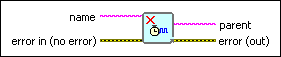

Clear Timing Source VI
Owning Palette: Timed Structures and VIs
Requires: Base Development System (Real-Time, Windows)
Stops and deletes the timing source you created or specified for use by another resource. The VI clears the timing source when the current iterations of all active timed structures that reference the timing source complete.
If the timing source is associated with a DAQmx task, the VI also clears the task.

 Add to the block diagram Add to the block diagram |
 Find on the palette Find on the palette |